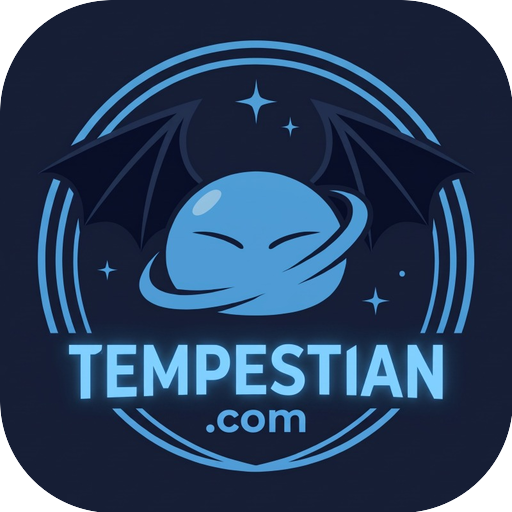

ŞU ANDA İZLENİYOR
Bölüm 9
26 Bölüm
UP NEXT · SIRADAKİLER
Aktif
Son Technopat Rehberleri
Tüm rehberler ›Açık Kaynak Projeler
Tüm projeler ›
Technopat Rehberleri
GNU/Linux, donanım ve yazılım
Açık Kaynak Projeler
NixOS, iNiR ve GitHub depoları
Zaman Tüneli
Kronolojik izleme ve okuma akışı
İstatistikler
Tüm arşiv özeti ve puan grafikleri